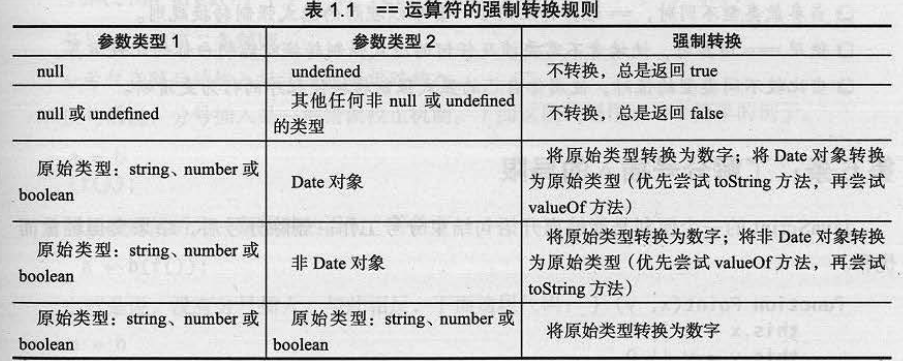

Effective JavaScript笔记-1
让自己习惯JavaScript
1. 了解JavaScript版本
主要了解ES5中引入的版本控制考量——严格模式（strict mode），此特性允许选择在受限制的JavaScript版本中禁止使用一些JS语言中问题较多或易于出错的特性。
考虑到向后兼容，即使在没有实现严格模式检查的环境中依然可以执行严格代码（strict code）。
启动方式：
可以在程序的最开始添加一个特定的字符串字面量（literal） "use strict";
也可以在函数体最顶部开始处加入这个指令启动该函数内的严格模式。1
2
3
4function(){
;
//...
}
解释执行字符串字面量没有任何副作用，所以ES3引擎执行该指令后立即丢弃执行结果，对程序并没有影响。
但是，由于旧版本的ES引擎不会进行任何的严格模式检查，若代码没有在ES5环境中测试过，则ES3中的代码在ES5中很有可能会出错1
2
3
4
5
6function(){
;
var arguments = []; //error： redefinition of arguments
//在严格模式下，不能重定义arguments变量，但是若在非严格模式下则可以执行
//...
}
由于"use strict";只在脚本或函数的顶部生效，所以若连接两个js脚本文件，则有可能会出错，
这种情况下应使用立即调用的函数表达式（Immediately Invoked Function Expression，IIFE），并在每一个IIFE函数顶部添加严格模式指令1
2
3
4
5
6
7
8
9
10
11
12
13
14
15(function(){
;
function bar(){
//...
}
//...
})()
(function(){
;
function foo(){
//...
}
//...
})()
IIFE这种方式多用于库或模块系统的设计中。
1. 需要确保所使用的JS的特性在程序将要运行的环境中都是可用的
2. 总是在严格模式检查环境下测试代码
3. 当心连接不同严格模式下的不同的脚本
2. 理解JS的浮点数
JS和其他语言不同，JS只有一种数值数据类型，那就是number,不管是整数还是浮点数，JS都将其归为数字。1
2
3typeof 16; //"number"
typeof 98.5; //"number"
typeof -2.1; //"number"
JS中所有的数字都是双精度浮点数,IEEE754标准64位double类型,一般的+,-,*,%都是没有问题的,但是位算术运算符比较特殊.
JS不会直接将操作数作为浮点数运算,而是会将其隐式的转换为32位整数后进行运算(32位大端Big-endian的2的补码表示的整数),
实例如:1
8|1; //9
其实是将数字8转化为二进制1000,数组1转化为二进制1(多余的前导0省略了),然后进行位运算
可以查看数字类型的二进制,toString方法的参数表示进制1
(8).toString(2); // "1000"
可以将字符串转按照对应进制转化为十进制的数1
parseInt('1001',2); // 9
使用浮点数的时候需要注意:
由于精度有限,即使是64位,但还是存在误差,所以对小数的浮点数进行操作的时候最好将其先转化为整数(银行内就是这样做的,按照最小的货币单位进行计算,比如分)1
2
3
4
5
6(0.1+0.2)+0.3; // 0.600000000000000000001
0.1+(0.2+0.3); // 0.6
//双精度double的整数范围在 -2^53 -- 2^53 之内
(1+2)+3; // 6
1+(2+3); //6
3. JS中的隐式的强制转换
1 | 3 + true; // 4 |
上式就是由于JS对类型的隐式转换导致的,在大多数情况下,JS不会抛出错误,而是按照多种多样的自动转换方式将值强制转换为期望的类型,例如:
算术运算符 - , * , / 和 % 在计算之前都会尝试将参数转换为数字,
而对运算符 + , 具体是数字相加还是字符串连接,取决于参数的类型.
一般而言,只要有字符串则优先使用字符串连接的方式1
2
3
4
5
6
7
82 + 3; // 5
"hello" + " world"; // "hello world"
"2" + 3; // "23"
2 + "3"; // "23"
// JS对操作顺序敏感,即符合左结合,
1 + 2 + "3"; // "33" 相当 (1 + 2) + "3";
1 + "2" + 3; // "123" 相当 (1 + "2") + 3;
位运算不仅会将操作数转换为数字,二期还会将操作数转换为32位整数, 位运算符包括:
位算术运算符(~ , & , ^ , |) 和 移位运算符(<< , >> , >>>)1
2"17" * 3; // 51
"8" | "1"; // 9
但强制转换也隐藏了错误,结果为null的变量在算术运算符中不会导致失败,而是被隐式转换为0,
一个未定义的变量将被转换为特殊的浮点数值NaN(not a number), NaN是唯一一个不等于自身的值,1
var x = NaN; x === NaN; // false
同时,标准库函数isNaN()也不靠谱,因为它自身带有隐式强制转换,在测试其他参数之前,会将参数转换为数字,
所以,除非你知道值是数字,你可以使用isNaN()测试它是否是NaN1
isNaN(NaN); // true
但对于其他绝对不是NaN,但会被强制转换为NaN的值,使用isNaN方法无法区分1
2
3
4isNaN('foo'); // true
isNaN(undefined); // true
isNaN({}); // true
isNaN({valueOf:"foo"}); // true
所以,使用简单但可靠的比较自身来检查一个值是否为NaN1
2
3
4
5
6
7
8
9
10
11
12
13
14
15
16
17
18
19
20var a = NanN;
a !== a; // true
var b = "foo";
b !== b; // false
var c = undefined;
c !== c; // false
var d = {};
d !== d; // false
var e = {valueOf: "foo"}; // false
e !== e; // false
//将其抽象为一个实用工具函数
function isReallyNaN(x){
return x !== x;
}
对象也可以被强制转换为原始值,最常见的用法是转换为字符串1
2
3
4
5"the Math object: " + Math; // "the Math object: [object Math]"
"the JSON object: " + JSON; // "the JSON object: [object JSON]"
Math.toString(); // "[object Math]"
Math.toString(); // "[object JSON]"
对象也可以转换为数字,通过valueOf方法1
2"J" + {toString: function(){return "S";}}; // "JS"
2 * {valueOf: function(){return 3;}}; //6
特别是,当一个对象同时包含toString和valueOf方法时,运算符+应该调用哪个方法并不明显,
做字符串连接还是加法应该根据参数的类型,但是存在隐式的强制转换,因此类型并不是显而易见!
JS默认选择valueOf而不是toString方法解决这种选择,所以产生的行为将出乎意料:1
2
3
4
5
6
7
8
9
10var obj = {
toString: function(){
return "[object MyObject]";
},
valueOf: function(){
return 17;
}
}
"object: " + obj; // "object: 17"
上面例子说明,valueOf方法才是为那些代表数值的对象(如Number对象)而设计的.对于这些数值对象,toString和valueOf应该返回一样的结果(相同的数字的字符串或数值)
一般的,字符串的强制转换远比数字的强制转换更常见,有用.最好避免使用valueOf,除非对象确实是一个数字的抽象,并且obj.toString()能产生一个obj.valueOf()的字符串表示.
最后一种强制转换有时称为真值运算(truthiness). if || &&等运算符逻辑上需要布尔值作为操作参数,但实际上可以接受任何值.
JS按照简单的隐式强制转换规则将值解释为布尔值.
- 大多数JS值都为真值,也就是能隐式转换为
true - 对字符串和数字以外的其他对象, 真值运算不会隐式调用任何强制转换方法
- JS中有7个假值:
false, 0, -0, "", NaN, null, undefined,其他都为真值1
2
3
4
5
6
7
8
9
10
11
12
13
14
15
16
17
18// 一个带默认值的接受可选参数的函数
function point(x, y){
if(!x) x = 320;
if(!y) y = 240;
return {x: x, y: y}
}
point(0, 0); // 本来预计输出原点{x: 0, y: 0},却输出{x: 320, y: 240}
// 检查参数是否为undefined更为严格的方式是使用typeof
function point(x, y){
if(typeof x === 'undefined') x = 320;
if(typeof y === 'undefined') y = 240;
return {x: x, y: y}
}
point(); // {x: 320, y: 240}
point(0,0); // {x: 0, y: 0}
//另外一种方式是直接与 undefined 比较
if(x === undefined) {//...}
注意:
1. 类型错误可能会被隐式的强制转换隐藏
2. 重载的运算符+进行加法还是连接操作取决参数类型
3. 对象通过valueOf转换为数值,toString转为字符串
4. 具有valueOf方法的对象应该实现toString方法,返回一个valueOf方法产生的数字的字符串表示
5. 测试一个值是否为未定义,应该使用typeof或与undefined比较,而不是直接进行真值运算
4.原始类型优于封装对象
除对象外,JS有5种原始值类型: 布尔值, 数字, 字符串, null 和 undefined.
但typeof null 的结果却是”object”
JS标准库提供了构造函数来封装布尔值,数字和字符串作为对象.1
2
3
4
5
6
7
8
9
10
11
12
13
14// String对象的行为和封装的字符串值类似
var s = new String("Hello");
s + " World"; // "Hello World"
s[4]; // "o"
// 但是不同点在于,String对象是一个真正的对象
typeof "Hello"; // "string"
typeof s; // "object"
// 即不能用内置的操作符比较两个截然不同的String对象的内容
// 因为每个String对象都是一个单独的对象,其只等于自身
var s1 = new String("hello");
var s2 = new String("hello");
s1 === s2; // false
s1 == s2; // false
其主要用处为: 这些对象有一些实用方法, 结合隐式强制转换,可以方便的使用这些方法
当对原始值提取属性或进行方法调用时,它表现得像已经使用了对应对象类型封装了该值一样.1
2
3
4
5"hello".toUpperCase(); // "HELLO"
// 而隐式封装的一个结果就是当对原始值设置属性,但对其没有任何作用
// 因为每次隐式封装都会产生一个新的String对象,所以这种设置原始值属性的方法是没有意义的
"hello".property1 = 1;
"hello".property1; // undefined
1. 当做相等比较时,原始类型的封装对象与其原始值行为不一样
2. 获取和设置原始类型值的属性会隐式创建封装对象
5. 避免对混合类型使用 == 运算符
1 | // 表达式的值是什么? |
结果为true, 由于隐式强制转换, 在比较之前,他们都会转为数字, 字符串解析为数字1,匿名对象调用自身的valueOf方法得到true, 然后再转换为数字, 得到1;
一般的,JS显示调用Number函数或者一些一元运算符+将值转换为数字,而更好的替代方式是使用严格相等运算符,当两个参数为同一类型时,== 和 ===没有差别, 但最好使用 ===

1. 当参数类型不同时, == 运算符会发生隐式强制转换规则
2. 使用 === 运算符, 使其不用任何转换规则比较
3. 当比较不用类型的值时,使用自定义的显示强制转换工具函数使程序清晰
6. 了解分号插入的局限
JS的自动分号插入(automatic semicolon insertion)是一种程序解析技术,能推断某些上下文中省略的分号
分号插入规则1
分号仅在 { 标记之前, 一个或多个换行之后 或 程序输入的结尾 被插入
也就是说,只能在一行, 一个代码块和一段程序结束的地方省略分号1
2
3
4
5
6
7function square(){
var n =+ x
return n * n
}
function area(r){r = + r; return Math.PI * r * r}
function area(r){r = + r return Math.PI * r * r} // error
function add1(x){return x + 1}分号插入规则2
分号仅在随后的输入标记不能解析时插入1
2
3
4
5
6
7
8
9a = b
(f());
// 等价于
a = b(f());
// 以下则被解析为两句
// 因为 a = b f(); 是错误的
a = b
f();
若某条语句的下一行的初始标记不能被解析为一个语句的延续,那么就不能省略该语句的分号
5个字符需要注意:( , [ , + , - , /以及数组字面量, 不能作为表达式运算符或一条语句的前缀,否则会有歧义1
2
3
4
5
6
7
8
9
10a = b
['r','g','b'].forEach(function(key){
backgound[key] = foreground[key] / 2;
});
// 以上可解析为
a = b['r','g','b'].forEach(function(key){
backgound[key] = foreground[key] / 2;
});
// 其中,涉及到逗号表达式, 逗号分隔表达式依次从左至右执行, 并返回最后一个表达式的值
// 上例中,返回字符b
注意连接两个立即调用函数表达式时1
2
3
4
5
6
7
8
9
10
11
12
13
14
15
16
17
18
19
20
21
22
23
24
25
26
27// file1.js
(function(){
//...
})()
// file2.js
(function(){
//...
})()
// 会被视作一条语句
(function(){
//...
})()(function(){
//...
})()
// 正确的方法是应该在文件头加上 ;
// file1.js
;(function(){
//...
})()
// file2.js
;(function(){
//...
})()
1. 分号仅在 { 标记之前, 一个或多个换行之后 或 程序输入的结尾被插入
2. 分号仅在随后的输入标记不能解析时插入
3. 注意连接两个立即调用函数表达式时
4. 在return, throw, break, continue, ++, -- 的参数之前绝不能换行
5. 分号不能作为for循环的头部或空语句的分隔符而被推导出, 即不会在for中加入分号
7. 视字符串为16位代码单元序列
不是很明白啥意思
1. JS字符串由16位代码单元组成,而不是Unicode码点组成
2. JS使用两个代码单元表示2^16极其以上的Unicode码点,这两个代码单元被称为代理对
3. 代理对甩开了字符串元素计数, length, charAt, charCodeAt方法及其正则表达式模式(例如.)受影响
4. 使用第三方库编写可是别码点的字符串操作
5. 每当使用含有字符串操作的库时,需要查阅文档, 看它如何处理代码点的整个范围